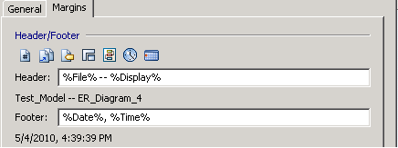

Add a Page Header or Footer
You can add a customized header or footer (or both) to all the pages when you print a model. For example, you can print the Model Name, Subject Area Name, and Diagram Name at the top of every page, and the page number, date, and time at the bottom of every page.
If you manually enter incremental information in the Header or Footer text box (for example, page number, date, and so on), you cannot automatically update the text.
A toolbar is provided to make it easy for you to quickly add the following elements:
- Current Page
- Page Count
- File Name
- Subject Area Name
- Diagram Name
- Time
- Date
To add a page header or footer
- Click Page Setup on the File menu.
The Page Setup Editor opens.
- Click the Margins tab and work with the following options in the Header or Footer text box:
- Click in the Header or Footer text box to specify in which area you want to insert the customized text.
- Click the appropriate Header/Footer button to automatically insert information, or use the keyboard to insert other information (for example, your name).
A preview of your selection displays beneath the text box.
For example, if you selected file name and E/R diagram for the header, and date and time for the footer, then the preview would be as follows:

- Work with the following related options in the editor:
- Indicate page margins (in inches) for the header or footer.
- Select the "Keep synchronized with Current Diagram" check box to associate your selections with the current diagram.
- Click the Load from Diagram button to reset any changed settings to the settings last saved to the diagram.
- Click the Save to Diagram button to save the current selections with the diagram for future use.
- Click Close to save your settings, or Cancel to cancel your selections.